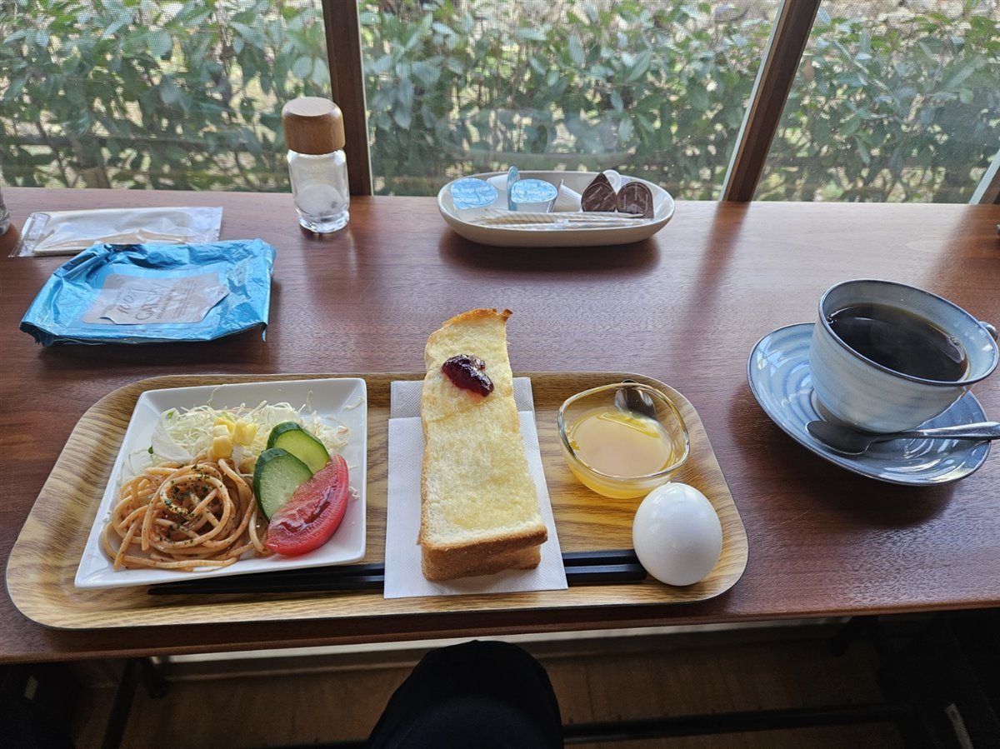
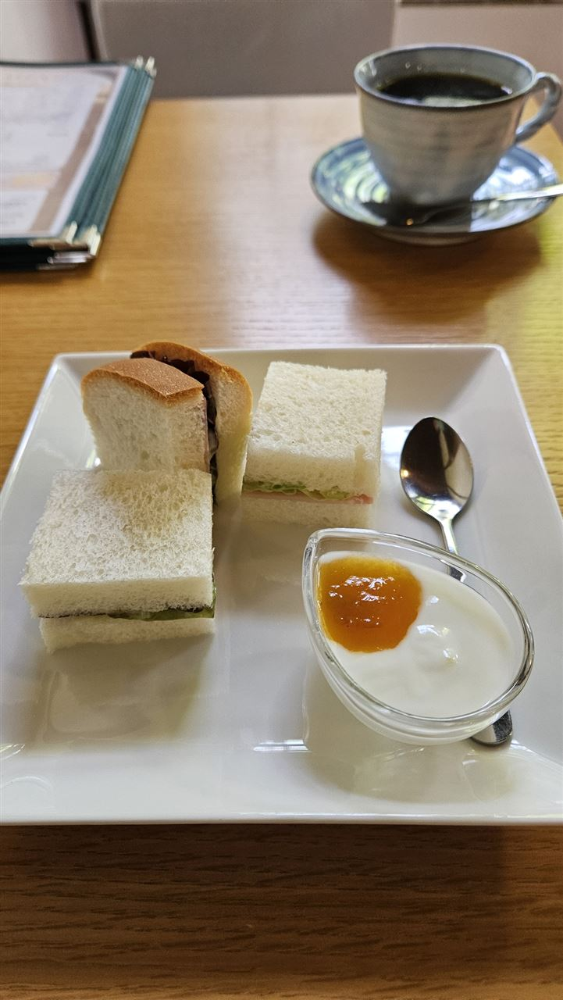
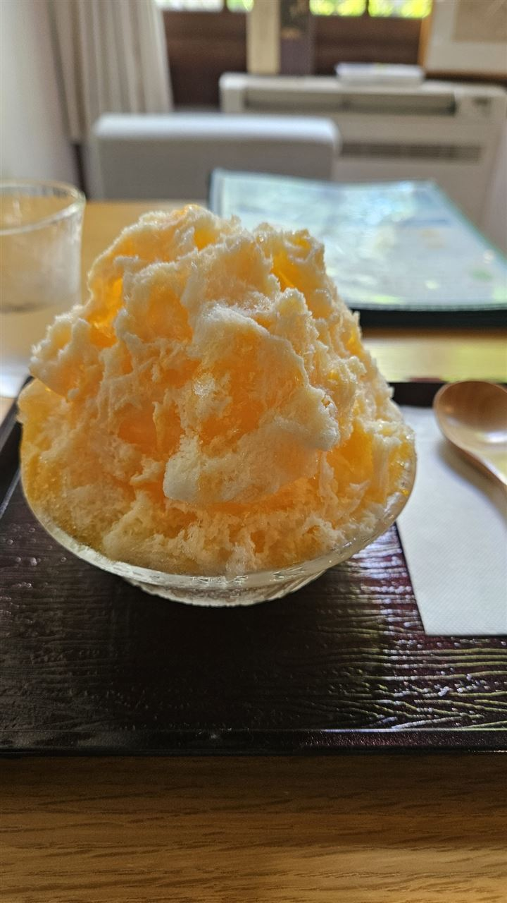
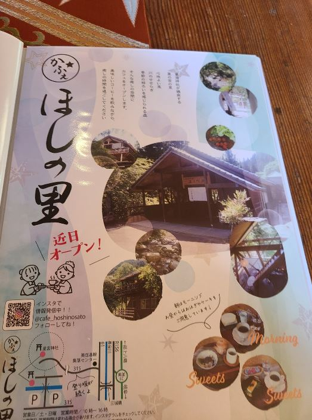
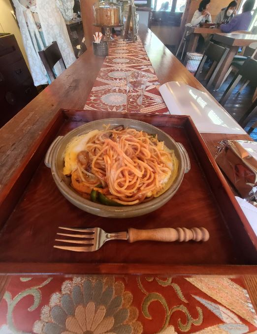
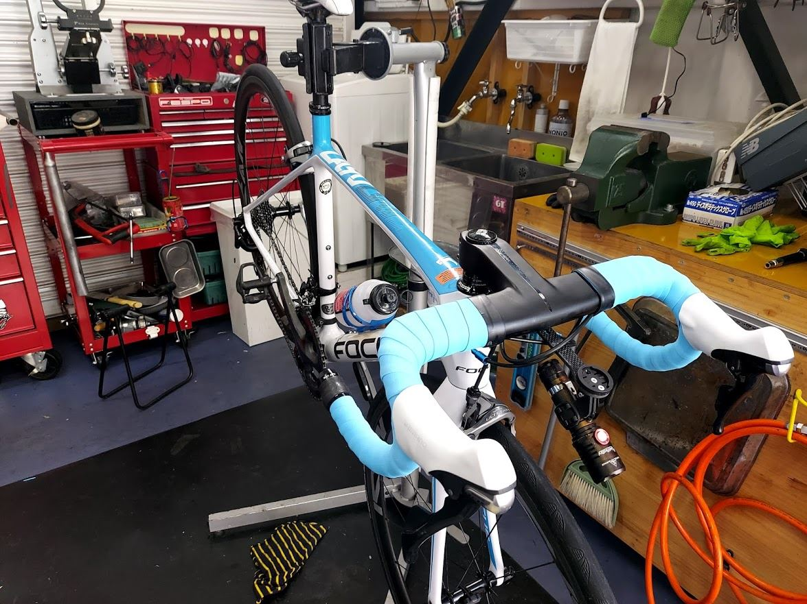
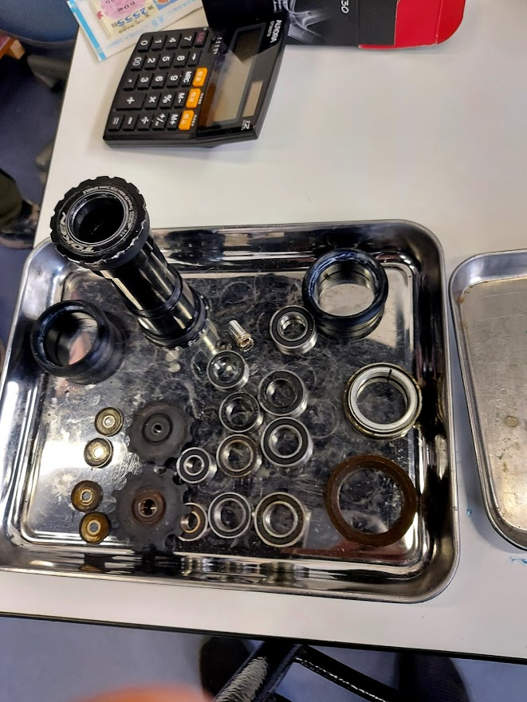

Shops
お店紹介
ライドの途中で立ち寄るカフェと､セキサイがお世話になっている自転車屋さんをご紹介します｡
カフェ
いぶカフェ
大正ロマンの建物で､サイクリストを朝から迎えてくれるカフェ



朝8時30分から営業しているので､朝練やモーニングライドにぴったりです｡コーヒーを頼むとモーニングがついてくるお値打ちなセットや､午後のアフタヌーンティー､夏のふわふわかき氷が人気です｡
建物は大正村のような風情があり､店員さんがとにかくやさしいお店です｡人気店なので､満席で入れないこともあります｡セキサイでは､冬のカフェライドの目的地にもなっています｡
カフェほしの里
粥川の里の奥にある､ライド中のごちそうカフェ


美並の粥川の里､星宮神社の近くにあるカフェです｡訪れたのはお昼前の11時でしたが､店内はとても賑わっていました｡
モーニングの時間をすぎていたので､ランチのナポリタンをいただきました｡この先には難所の八王子峠が待っているので､ここでしっかり補給していきます｡コガイチなど､高賀山周辺のコースにおすすめです｡
自転車屋
レンタサイクルオンオフ
関市百年公園南口にある､やさしい店主さんの自転車屋


関市の百年公園南口にあるスポーツバイクのお店です｡セキサイのメンバーも､いつもお世話になっている行きつけのお店です｡
いちばんの特長は､やさしい店主さんです｡ネットで買ったパーツなど､持ち込みのパーツでも取り付けてくれます｡初心者でも相談しやすく､ロードバイクのレンタルもあるので､自転車選びに迷っているときにも心強い味方です｡
年に一度のオーバーホールや､ライド前日の急なトラブルにも対応してもらっています｡